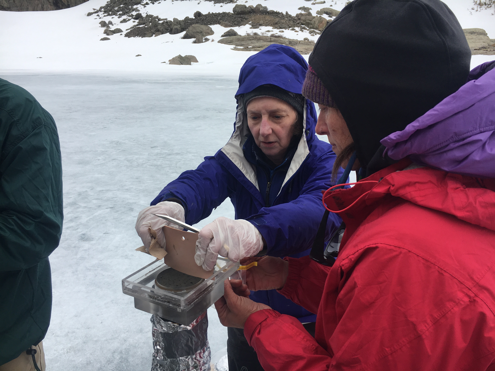
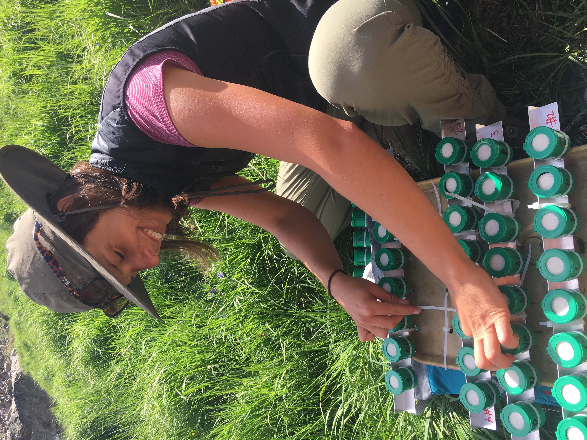

Research story
What research and monitoring have shown
The record began with acid rain, grew to include nitrogen, and now helps explain how warming is changing mountain lakes.

Story 1
Acid rain started the work
In the early 1980s, scientists wanted to know whether air pollution was making remote mountain lakes more acidic. Loch Vale became a place to measure that question carefully.
What researchers measured
Samples from snow, streams, and lake outlets showed how sulfur and nitrogen entered the watershed and how much buffering capacity remained in the water.
Sediment cores added a longer view: neither metal nor diatom proxies showed evidence of acidification. Lead increased with mining and later leaded gasoline, while diatoms shifted from no clear dominance to dominance by Asterionella formosa and Fragilaria crotonensis, algae that respond to nutrients. Explore the research publications.

Story 2
Nitrogen became the next concern
Nitrogen is a nutrient, but too much of it can change soils, lakes, and alpine vegetation.

Science shaped policy
Research at Loch Vale helped document how reactive nitrogen moves through high-elevation ecosystems. That evidence supported Colorado's 2007 Nitrogen Deposition Reduction Plan for Rocky Mountain National Park.
- Plan established
- 2007
- Deposition target
- 1.5 kg N ha−1 yr−1
- Target year
- 2032
Story 3
Climate now shapes the signal
Warmer summers, shifting snowpack, and earlier ice-off dates affect lake temperature, chemistry, and biology.
Warming changes watershed chemistry
One important finding is that sulfate can rise inside the watershed even while sulfate pollution from the air declines. Warmer conditions may speed the weathering of sulfur-bearing rock.
The same record also helps researchers study how warmer water and added nutrients affect algae, microbes, and other lake life.